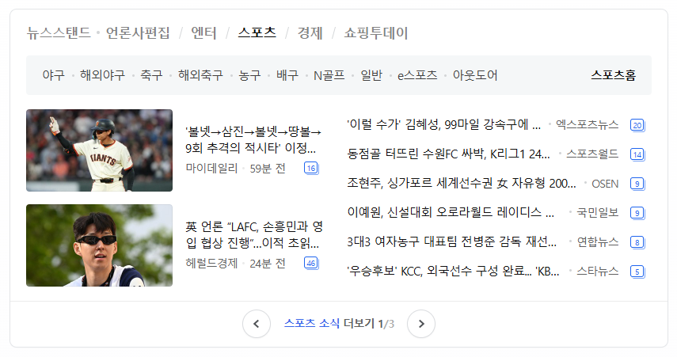

뉴스스탠드 · 언론사편집
엔터
스포츠
경제
쇼핑투데이
야구
해외야구
축구
해외축구
농구
배구
N골프
일반
e스포츠
아웃도어
스포츠홈

'볼넷→삼진→볼넷→땅볼→
9회 추격의 적시타' 이정...
마이데일리
59분 전
英 언론 "LAFC, 손흥민과 영
입 협상 진행"...이적 초읽...
헤럴드경제
21분 전
'이럴 수가' 김혜성, 99마일 강속구에 ...
·엑스포츠뉴스
동점골 터뜨린 수원FC 싸박, K리그1 24...
·스포츠월드
조현주, 싱가포르 세계선수권 女 자유형 200...
·OSEN
이예원, 신설대회 오로라월드 레이디스 ...
·국민일보
3대3 여자농구 대표팀 전병준 감독 재선...
·연합뉴스
'우승후보' KCC, 외국선수 구성 완료... 'KB'
·스타뉴스
스포츠 소식
더보기
1
/3